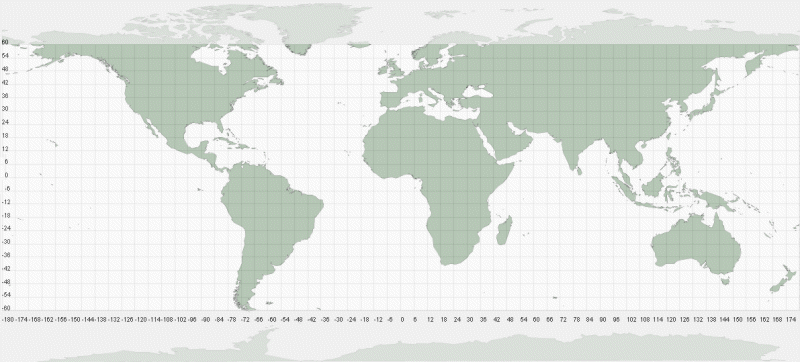
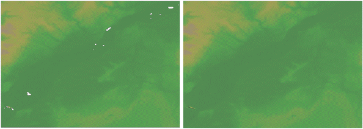
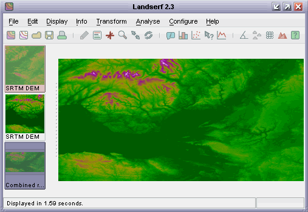
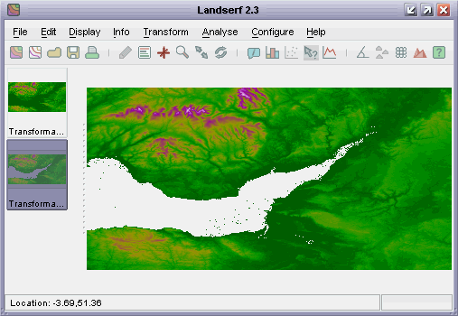
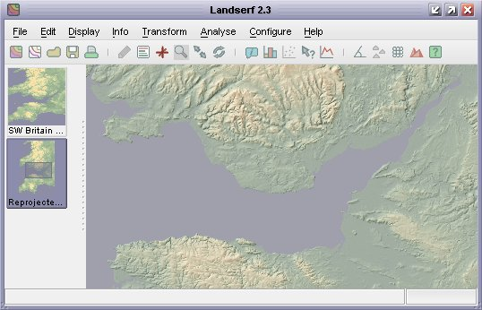
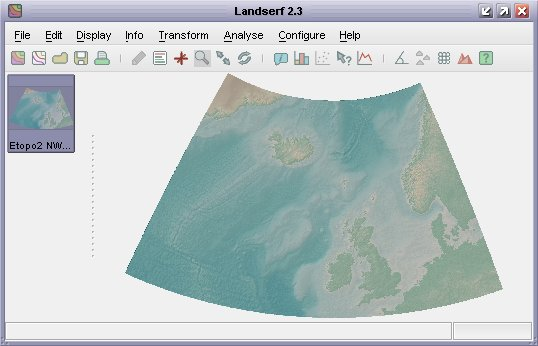

The Shuttle Radar Topography Mission is a collaborative project between NASA, the National Imagery and Mapping Agency (NIMA), and the German and Italian space agencies to map the elevation of a large part of the globe. Using Synthetic Aperture Radar (SAR) attached to the Endeavor space shuttle, the mission was flown for 11 days between 11th and 22nd of February 2000. Subsequently, the data collected were processed and have been released as DEMs for the majority of the earth's landmass. See www2.jpl.nasa.gov/srtm for details on the background to the project.
SRTM DEMs at a 3 arc-second resolution (~90m at the equator) are freely available for most of the globe. Additionally, 1 arc second (~30m at the equator) SRTM DEMs are available in various formats for the continental United States and a combined SRTM, GTOPO30 and bathymetry dataset at 30 arc-seconds, known as srtm30Plus is available for the entire globe. SRTM data are often distributed in '.hgt' format as described in the SRTM documentation. Data for the United States are also distributed in other raster formats from the USGS seamless data server.
Note that there are currently 3 versions of SRTM currently being distributed. 'Version 1' SRTM data are the raw elevation values sampled and smoothed at either 1 or 3 arc second resolution and include voids and erroneous data over water bodies. 'Version 2' data have been post-processed in an attempt to remove voids, mask out sea areas and generally remove any known erroneous spikes in the data. SRTM data are also available on DVD from the EROS data center. These data have been post-processed but have been sampled without smoothing from higher resolution SRTM data. Consequently the data will appear slightly rougher compared with those downloaded from the servers described below.
Version 2 HGT format data for most of the globe between 60oN and 60oS can be found at
ftp://e0srp01u.ecs.nasa.gov/srtm/version2/ organised by continent.

SRTM coverage. Each grid square above represents 6 degrees, therefore covers 36 SRTM tiles.
Each file covers a 1 degree by 1 degree section of the earth's surface and is named according to the latitude
and longitude of its bottom left corner. So for example, the city of Bristol in the UK located at 51o28' N, 2o35' W
can be found in the tile N51W003.hgt. Tiles east of the Greenwich Meridian will be named with an 'E' rather than 'W', and
those south of the equator with an 'S' rather than 'N'. It is important to retain the name of the tile when downloading data as this
is used by LandSerf to attach the correct spatial metadata to the DEM.
When wishing to download several tiles covering a continuous area of the globe, it is useful to identify the names of the tiles you wish to use in advance, since the download sites usually list them in alphabetical order and not necessarily in terms of an obvious geographical pattern.
Once downloaded, you should 'unzip' the files in a directory on your machine. You should then be able to import the .hgt
files directly into LandSerf by selecting Shuttle Radar Topography Mission DEM (.hgt) file type from the file dialogue
displayed by LandSerf's File->Open menu.
Note: If you are importing srtm30Plus files, the same guidelines above apply except that the file will have the extension .srtm rather than .hgt, and each tile is 40 degrees E-W by 50 degrees N-S.
Note that the following step is unnecessary if you are importing srtm30Plus or Version 2 HGT files as they have already been processed to remove any voids.
Due to the nature of deriving elevation from Synthetic Aperture Radar, most Version 1 SRTM DEMs will contain 'voids' or cells where no
elevation value could be found. This is especially the case for some water surfaces and patches of very rough terrain. In LandSerf voids
will appear as light-grey gaps in the DEM. Usually, you will want to remove these void cells before processing further. You can do this
either by combining the DEMs with other DEMS of the same area for which you have elevation data (e.g. GTOPO30 data), or more simply
by selecting Void removal from the Transform menu. After selecting this option, select Refresh
(or Ctrl-R) from the Display menu to see the effect of the void removal.

DEM before and after void removal
Void removal works by replacing the outer 'ring' of a void with the average of its non-void neighbours, repeating the process until no voids remain. For most voids, which are usually small holes, this results in a pretty reliable interpolation. For larger patches, this can leave minor artifacts in the interpolated area that look like radiating 'spokes' from the centre of the void patch.
The following step is unlikely to be necessary if you are importing srtm30Plus files. In fact, you are more likely to want to subset
a smaller region from the large continental-scale tiles. To do this select Edit->Edit raster then mark an area
to subset with the mouse before selecting the Extract subset box and pressing OK.
In many cases, you will wish to create a DEM that is made up of several contiguous SRTM tiles. To do this, you should import and
process the first two tiles as described above. When you have two void-free tiles in LandSerf, make sure one is selected as the
primary raster (left-click its thumbnail view) and the other selected as the secondary raster (right-click its thumbnail view).
Choose Combine rasters... from the Edit menu.
Combining rasters allows you to merge the contents of two existing raster maps to create a new one. The new raster can be made up
of the intersection of two overlapping rasters, or the union. In this case you should select the Union option so that
the entire contents of both primary and secondary rasters are combined to create the new one.
If the primary and secondary rasters overlap you can tell LandSerf which raster to prioritise for these cells. Since the SRTM data
should be the same for any overlapping edge cells, this should not make any difference. The final option to 'Replace null values'
should also make no difference in this case, since we have removed all voids in the previous step.
After successfully combining two adjacent SRTM rasters you should have something similar to the figure below. To save on resources,
you can now delete the original primary and secondary rasters, and save the new combined one to disk. To build up the contiguous
region further, you should repeat steps 1 to 3, but this time using the new combined raster as one of your input raster maps.

Combined rasters
If you need to combine many tiles into a single DEM, you may find it easier to create a LandScript file containing the combination instructions. An example is given below, which can be modified to use the names of the files you wish to combine.
1 2 3 4 5 6 7 8 9 10 11 12 13 14 15 |
# Combines SRTM tiles into a single raster. version(1.0); baseDir = "/users/jowood/data/srtm/"; raster = open(baseDir & "N51E001.hgt"); raster = combine(raster_,open(baseDir & "N51E000.hgt")); raster = combine(raster_,open(baseDir & "N51W001.hgt")); raster = combine(raster_,open(baseDir & "N51W002.hgt")); raster = combine(raster_,open(baseDir & "N52E001.hgt")); raster = combine(raster_,open(baseDir & "N52E000.hgt")); raster = combine(raster_,open(baseDir & "N52W001.hgt")); raster = combine(raster_,open(baseDir & "N52W002.hgt")); save(raster,baseDir & "EastEngland.srf"); |
The following step is not necessary if you are importing srtm30Plus (sea areas contain bathymetric sea floor data) or using 'Version 2' HGT files (sea already masked and set to 0m elevation).
If the DEM area you have selected contains sea in addition to land, it is sometimes convenient to mask out the non-land
areas from analysis and display. This can be done in two ways. If you have a raster containing the land/sea boundary for the
area of interest, you can set the land area to null and combine the raster with your DEM, making sure you select
the 'replace null values' tick box. In this way, only the land raster cells will be transferred to the new raster.
A simpler option which works reasonably well is to 'flood fill' all areas less than 0m elevation, and then classify all elevations
of 0 as null. To do this, select your combined DEM as the primary raster and then select the Transform->Raster values...
menu item. Select the Flood tickbox, leave the default value of 0, and press OK. This will produce a new
DEM with all values that were originally less than 0 now classified as 0. Selecting that new raster, choose the Transform->Raster values...
menu item again, this time selecting Replace 0 with n on the bottom line. Pressing OK should
reclassify the DEM with all values that were 0 (sea) now classed as null. An example is shown in the figure below.

Combined rasters with water masked
This is not a perfect method, as the SRTM data may well have identified some of the sea area as having an elevation of above 0m (small dots in the figure above). These can be masked by overlaying patches of null valued rasters in areas known to be sea, or by using LandScript to apply a median filter to cells surrounded by null values.
As SRTM data are provided in geographical (latitude/longitude) coordinates, they are generally unsuitable for most analysis unless the are projected onto a planar coordinate system where the (x,y) units are the same as the elevation units. LandSerf allows reprojection into a veraiety of coordinate systems including UTM, Ordnance Survey, French and Swiss national grids, all of which use coordinate systems in metre units.
To reproject, firstly check that the existing combined raster has the relevant projection metadata attached by selecting the
Edit->Edit raster... menu option and pressing the Edit button in the Map projection
area. The map projection should be set to Latitude/longitude projection and WGS84 ellipsoid. Press
the OK buttons to confirm these values. To reproject the DEM, select the Transform->Reproject...
menu, and choose an appropriate new projection from the drop down menu. Pressing OK will display a new dialogue
window with the option for you to change any of the bounding coordinates or resolution of the new raster. Generally, you can
accept the default values for the bounding area, but you should change those for the E-W and N-S resolution. The resolution of
the unprojected DEM is about 90m at the equator, but decreases to about 60m at the northern and southern extremities of the
mapped area. You should select the same resolution for N-S and E-W values so that the resulting DEM has square pixels. Typically,
this should be in the range of 60-90m for the 3 arc-second data, 20-30m for the 1 arc-second data, or ~1000m for the 30 arc-second
data, but can be finer or coarser than that if required. Pressing the OK button should perform the reprojection,
producing a DEM ready for analysis.

Reprojected DEM ready for analysis

Reprojected srtm30plus DEM and bathymetry
If you are reprojecting srtm30Plus data, beware of attempting to reproject data at very high latitudes (beyond +-80 degrees) to UTM. To avoid undue distortion, if possible, subset the data to be within at most +-80 degrees before attempting a reprojection.
An example script that will import eight SRTM files, remove their voids, flood all elevations below 0 to sea level and add appropriate colour and title metadata is shown below. This can be adapted for importing and tiling any set of SRTM data by changing the appropriate file names and base directory, and possibly the new projection to use.
1 2 3 4 5 6 7 8 9 10 11 12 13 14 15 16 17 18 19 20 21 22 23 24 25 26 27 28 29 30 31 32 33 |
# Combines SRTM tiles into a single raster. version(1.0); baseDir = "/users/jowood/data/srtm/"; raster = open(baseDir & "N51E001.hgt"); raster = combine(raster_,open(baseDir & "N51E000.hgt")); raster = combine(raster_,open(baseDir & "N51W001.hgt")); raster = combine(raster_,open(baseDir & "N51W002.hgt")); raster = combine(raster_,open(baseDir & "N52E001.hgt")); raster = combine(raster_,open(baseDir & "N52E000.hgt")); raster = combine(raster_,open(baseDir & "N52W001.hgt")); raster = combine(raster_,open(baseDir & "N52W002.hgt")); # Remove any voids in the raster. raster = removevoids(raster_); # Flood any values less than 0 raster = ifelse(raster<0,0,raster); # Reproject data to Ordnance Survey National Grid. raster = reproject(raster_,"OSGB","true",90,90); # Create new colour table with blue for sea level colouredit(raster,"land3"); colouredit(raster,"addrule","0 141 141 166 (D)"); colouredit(raster,"addrule","1 141 166 141"); # Add metadata to new raster edit(raster,"title","SRTM 2 South East England"); # Save the combined and reprojected raster. save(raster,baseDir & "SouthEastEnglandOSGB.srf"); |